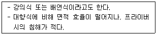
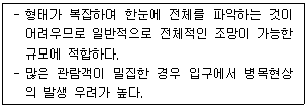
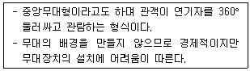
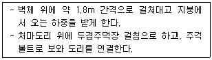
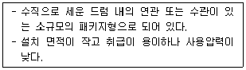
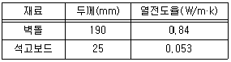

1과목: 실내디자인론
1. 다음 설명에 알맞은 사무실의 책상 배치 유형은?

2. 박물관 및 미술관의 전시조명계획에 관한 설명으로 옳지 않은 것은?
3. 다음 설명과 같은 특징을 갖는 전시공간의 평면형태는?

4. 펜로즈의 삼각형과 가장 관련이 깊은 착시의 종류는?
5. 정육면체 공간에 관한 설명으로 옳은 것은?
6. 아파트의 평면형식 중 중복도형에 관한 설명으로 옳지 않은 것은?
7. 주택에서 부엌의 합리적인 규모 결정과 가장 관계가 먼 것은?
8. 정지된 인체치수와 동작을 중심으로 한 인간공학적 측면에서 구분한 가구의 종류에 해당하지 않은 것은?
9. 주택의 공간구성 기법 중 원룸 시스템에 관한 설명으로 옳지 않은 것은?
10. 다음의 실내디자인 원리 중 인간생활의 기능적 해결과 가장 관계가 깊은 것은?
11. 실내공간의 계단에 관한 설명으로 옳지 않은 것은?
12. 현실적 형태 중 자연형태에 관한 설명으로 옳지 않은 것은?
13. 창의 기본적 기능과 가장 거리가 먼 것은?
14. 리듬의 효과를 위해 사용되는 요소에 해당되지 않는 것은?
15. 황금비례로 가장 알맞은 것은?
16. 공간의 적정치수 선정방법에 해당하지 않은 것은? (단, α는 적정치수를 끌어내기 위한 여유치수이다.)
17. 실내디자인의 영역에 관한 설명으로 옳은 것은?
18. 다음과 같은 특징을 갖는 극장의 평면형은?

19. 상점의 공간구성 중 판매공간에 해당하지 않는 것은?
20. 의자 및 소파에 관한 설명으로 옳지 않은 것은?
2과목: 색채학
21. 실제의 위치보다 가깝게 있는 것처럼 보이는 색을 뜻하는 것은?
22. 영·헬름홀츠 색지각설의 3원색은?
23. NCS 표기법의 “S2030-Y90R”에 대한 설명 중 틀린 것은?
24. 색채조화에 관한 설명 중 틀린 것은?
25. 다음 눈의 구조적인 기능 설명 중 틀린 것은?
26. 채도에 관한 설명 중 옳은 것은?
27. 다음 중 노란색과 배색하였을 때 가장 부드러운 느낌으로 조화되는 색은?
28. 다음 중 포토샵의 Color Picker에서 빨강을 표현하는 색채시스템이 아닌 것은?
29. 오륜기에서 유럽을 상징하는 색은?
30. 색 교정, 색 혼합작업을 정확하게 수행하기 위해서는 어떤 시세포가 작용할 수 있는 시각상태로 만들어야 하는가?
31. 먼셀의 표색기호 5G 5/8에 대한 설명 중 옳은 것은?
32. 백화점에서 산 물건을 밖에서 보면 다른 색으로 느껴질 때가 있다. 이는 광원의 어떠한 성질 때문인가?
33. 미국의 색채학자 저드가 주장하는 색채조화의 4가지에 해당되는 것은?
34. 다음 중 모든 디지털화된 이미지의 기본적 색채 특징이 아닌 것은?
35. 병치혼합은 다음 중 어떤 화가가 작품에 주로 사용되었는가?
36. 다음 중 프르킨예 현상으로 밝은 곳에서 가장 밝게 느껴지는 색은?
37. 무채색 계통의 색의 온도감의 요인으로 가장 강하게 작용하는 것은?
38. 다음 중 글자가 가장 가늘게 보이는 배색은?
39. 다음 중 가장 가벼운 느낌을 주는 배색은?
40. 4도 오프셋 인쇄에 적용된 색채 혼합의 원리는?
3과목: 인간공학
41. 다음 중 인체 계측치를 응용할 때 주의할 점으로 적합하지 않은 것은?
42. 다음 중 온열요소에 해당하지 않는 것은?
43. 다음 중 제품디자인에 있어 인간공학적인 고려대상으로 볼 수 없는 것은?
44. 속삭이는 말의 음압은 0.002dyne/cm2 정도라고 할 때 이것은 몇 dB의 강도인가?
45. 다음 중 의자를 디자인할 때 고려해야 할 사항으로 가장 거리가 먼 것은?
46. “소음작업”은 1일 8시간 작업을 기준으로 얼마 이상의 소음이 발생하는 작업을 말하는가?
47. 다음 중 조정-반응 비율(C/R비)에 대한 설명으로 틀린 것은?
48. 다음 중 계수형 표시장치를 갖는 온도계가 주로 다루고 있는 정보는?
49. 다음 중 생채역학에 있어 힘과 모멘트에 관한 설명으로 틀린 것은?
50. 다음 중 신호검출이론(Signal Detection Theory)에서 “신호와 소음이 함께 존재하는 경우”에 관한 설명으로 틀린 것은?
51. 다음 중 조종 장치를 촉감에 의하여 구별할 수 있도록 설계하기 위하여 두께는 최소한 얼마 이상 차이가 나도록 하여야 하는가?
52. 다음 중 게슈탈트의 지각범주와 관계가 가장 적은 것은?
53. 음이 한 옥타브가 높아지면 진동수는 몇 배가 되겠는가?
54. 다음 중 인간공학 연구의 3가지 기준 요건과 거리가 먼 것은?
55. 다음 중 조명과 관계된 단위의 설명으로 옳은 것은?
56. 다음 중 에너지대사율(RMR)을 나타내는 식으로 옳은 것은?
57. 다음 중 신체 동작의 유형에 있어 굴곡(flexion)에 대한 동작에 해당하는 것은?
58. 시각피로의 원인 중 망막에 맺히는 상이 두 눈에 차이가 날 경우에 생기는 안정피로의 종류는?
59. 시력표에서 식별할 수 있는 최소표적의 시각이 2분(‘)이라면 이 사람의 시력은 얼마인가?
60. 다음 중 피부 감각의 특성에 관한 설명으로 틀린 것은?
4과목: 건축재료
61. 공기 중의 탄산가스와 반응하여 경화하는 기경성 미장재는?
62. 다음 중 내수성이 높고 내열성이 매우 우수하며 유리섬유판, 텍스 접착의 용도로 쓰는 접착제는?
63. 목재의 방부 처리법에 해당하지 않는 것은?
64. 다음 중 경령골재가 아닌 것은?
65. 타일형 바닥재 중 리놀륨타일에 대한 설명으로 옳은 것은?
66. 아스팔트계 방수재료에 대한 설명 중 옳지 않은 것은?
67. 다음 시멘트 중 강도 발형 특성이 다른 시멘트는?
68. 금속재료의 특성에 대한 설명으로 옳지 않은 것은?
69. 목재의 심재와 변재를 비교한 설명 중 옳지 않은 것은?
70. 소성 점토벽돌의 붉은 색을 결정하는 가장 중요한 요소는?
71. 콘크리트의 동결융해 저항성능을 향상시키기 위해 사용되는 혼화제는?
72. 석재의 일반적인 성질에 관한 설명 중 옳지 않은 것은?
73. 판유리의 성분 중 구성비율이 가장 큰 것은?
74. 강의 열처리방법과 그 목적의 연결이 옳지 않은 것은?
75. 콘크리트의 블리딩(bleeding)을 억제하기 위한 대책으로 옳지 않은 것은?
76. 유리섬유를 불규칙하게 상온가압하여 성형한 판으로, 알칼리 이외의 화학약품에 대한 저항성이 있고 설비재, 내외 수장재로 쓰이는 것은?
77. 콘크리트의 크리프에 대한 설명으로 옳지 않은 것은?
78. 대리석 일종으로 다공질이며 황갈색 반문이 있어 실내장식용으로 사용되는 석재는?
79. 콘크리트에 A.E제를 첨가했을 경우 공기량 증감에 큰 영향을 주지 않는 것은?
80. 석재의 구성 광물 중에서 경도가 가장 큰 것은?
5과목: 건축일반
81. 다음 중 프랑스 고딕양식의 건축물이 아닌 것은?
82. 건축허가 신청 시 에너지 절약계획서를 제출하지 않아도 되는 것은?
83. 절충식 지붕틀에서 다음과 같은 특성을 갖는 부재는?

84. 철근콘크리트보에서 늑근을 쓰는 가장 큰 이유는?
85. 문화 및 집회시설(전시장 및 동·식물원 제외) 용도에 쓰이는 건축물의 관람석 또는 집회실의 바닥면적이 200m2 이상인 경우 반자의 높이는 최소 얼마 이상인가?
86. 다음 중 각 소방시설의 종류별 연결이 옳지 않은 것은?
87. 다음 건축물 중 그 주요구조부를 내화구조로 하여야 하는 것은?
88. 로코코 양식의 특징에 대한 설명 중 거리가 먼 것은?
89. 건축물에 설치하는 헬리포트 설치기준으로 옳지 않은 것은?
90. 건축물의 3층 이상의 층으로서 문화 및 집회시설의 공연장이나 위락시설 중 주점영업의 용도에 쓰이는 층으로 그 층 거실의 바닥면적의 합계가 몇 m2 이상일 때 옥외피난계단을 설치하여야 하는가?
91. 네덜란드에서 암스테르담파와 대립한 것으로 단순, 명쾌, 획일, 간결, 객관성을 미학적, 윤리적 기초로 삼은 근대운동은?
92. 플랫슬래브구조의 특징에 대한 설명 중 옳지 않은 것은?
93. 목구조의 맞춤방법 중 걸침턱맞춤이 사용되는 목구조의 접합부분은?
94. 주심포식 건물의 구성부재가 아닌 것은?
95. 건축물에 경계벽 및 간막이벽을 설치함에 있어 소리를 차단하는데 장애가 되는 부분이 없도록 하기 위한 구조기준으로 옳지 않은 것은?
96. 다음 중 목구조 접합부에 관한 설명으로 옳지 않은 것은?
97. 다음 중 PC(Precast Concrete)공법의 장·단점에 대한 설명으로 옳지 않은 것은?
98. 스테인드 글라스(Stained Glass)에 대한 설명을 중 옳지 않은 것은?
99. 철골구조의 고력볼트접합에 관한 설명 중 옳지 않은 것은?
100. 田자형 주택에 관한 설명 중 올지 않은 것은?
6과목: 건축환경
101. 점광원으로부터 일정 거리 떨어진 수평면의 조도에 관한 설명으로 옳지 않은 것은?
102. 자연환기량에 관한 설명으로 옳지 않은 것은?
103. 주관적 온열요소 중 착의상태의 단위는?
104. 각종 흡음재에 관한 설명으로 옳지 않은 것은?
1⑤. 다음 중 음의 3요소에 해당되지 않는 것은?
106. 실내음향설계에 관한 설명으로 옳지 않은 것은?
107. 램프광속 중 조명범위에 유효하게 이용되는 광속의 비율을 의미하는 것은?
108. 전기설비의 전압 구분에서 저압의 기준으로 옳은 것은?
109. 유효온도(ET : effective temperature)에서는 고려하나, 작용온도에서는 고려하지 않는 요소는?
110. 건축물의 에너지 절약을 위한 단열계획으로 옳지 않은 것은?
111. 바닥충격음에 대한 차음대책으로 옳지 않은 것은?
112. 직접조명방식에 관한 설명으로 옳지 않은 것은?
113. 실내의 압력이 외부보다 높아지고 공기가 실외에서 유입되는 경우가 적은 기계환기법은?
114. 다음 설명에 알맞은 보일러의 종류는?

115. 일조의 확보와 관련하여 공동주택의 인동간격 결정과 가장 관계가 깊은 것은?
116. 다음과 같은 재료로 구성된 벽체의 열관류율은? (단, 벽체의 내표면 열전달률은 8.3W/m2·K, 외표면 열전달률은 16.6W/m2·K 이다.)

117. 다음 중 실내공기 중의 유해오염물질과 발생 근원의 연결이 옳지 않은 것은?
118. 잔향시간에 관한 설명으로 옳지 않은 것은?
119. 급탕배관의 설계 및 시공상의 주의점으로 옳지 않은 것은?
120. 건축물의 내부결로 방지대책으로 옳지 않은 것은?